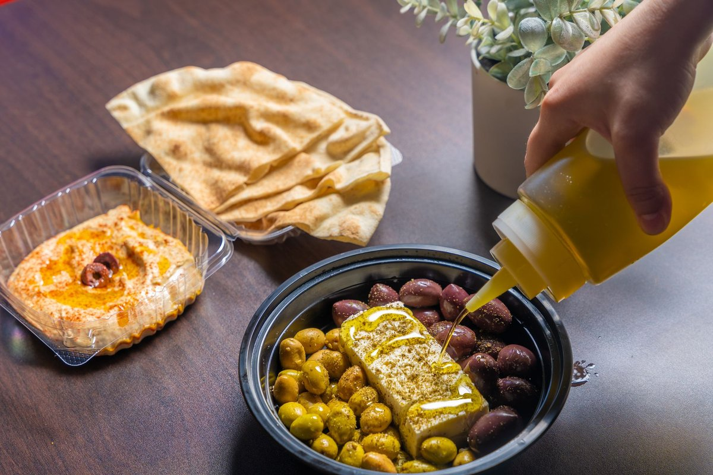
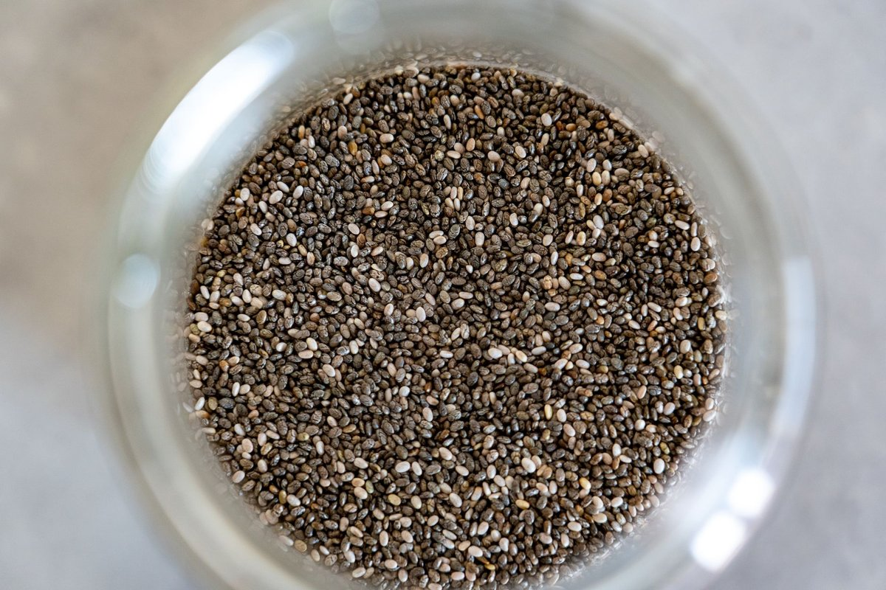
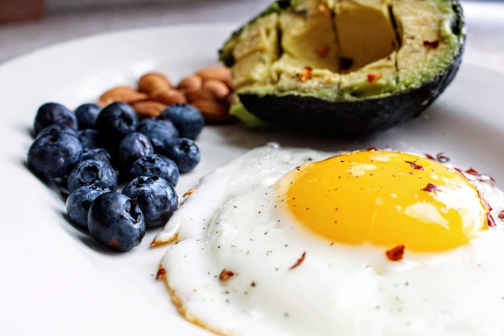

Eating Olive Oil Before Carbs Has A Surprising Effect On Blood Sugar

Key takeaways
- Two years ago, every bowl of takeout penne left me face-down on my sofa fighting brain fog and intense sugar cravings.
- Discovering that eating olive oil before carbs has a surprising effect on blood sugar completely flipped the script on my chaotic post-meal c
- Track what feels sustainable and adjust gradually.
Two years ago, every bowl of takeout penne left me face-down on my sofa fighting brain fog and intense sugar cravings. Discovering that eating olive oil before carbs has a surprising effect on blood sugar completely flipped the script on my chaotic post-meal crashes.
I used to think controlling glucose meant banning warm sourdough baguettes forever. It turns out the secret is not giving up starch, but changing your biological digestive order.
When you coat your gut lining with extra virgin olive oil before taking a single bite of carbohydrates, you stimulate the release of GLP-1 and cholecystokinin. These gut peptides slow gastric emptying, meaning glucose enters your bloodstream at a gentle trickle instead of an overwhelming tidal wave.
Research confirms that healthy monounsaturated fats ingested 10 to 15 minutes prior to starches noticeably blunt postprandial glucose excursions. By understanding that eating olive oil before carbs has a surprising effect on blood sugar, you can enjoy comfort food without the afternoon slump.
During my worst glucose rollercoasters, I paired this ritual with better microbiome care. That journey led me to take a Daily Synbiotic Capsule every morning to help support healthy digestion alongside smart fat-loading habits.
If you struggle with digestive speed or bloating, checking out this another practical guide can give you extra clarity on metabolic rhythm. Your gut bacteria play a massive role in how your system processes every gram of fat and starch you consume.
The 2-Minute Win
Pour one tablespoon of cold-pressed extra virgin olive oil over a small bowl of raw cucumbers or greens, sprinkle sea salt, and chew slowly ten minutes before pasta night.
Do not just dump the oil on top of your cooked white rice at the very end. The physiological trick relies on gastric pre-exposure, giving your intestines time to signal satiety hormones early.
I also recommend pairing this ritual with a similar wellness insight like a brisk ten-minute walk immediately following your meal. Over time, little tweaks compound into serious metabolic freedom.
Pro-Tip: Look for estate-bottled extra virgin olive oil packaged in dark glass with a clear harvest date, ensuring the high-polyphenol count required to modulate carbohydrate digestion.
Finding sustainable routines took me months of frustrating trial and error. To stay consistent with this, keep a small cruet of robust olive oil on the kitchen counter right where you chop your pre-dinner veggies.
Feel empowered to explore more healthy-habits guides to build an effortless pantry toolkit that works for your real life. Educational only — not medical advice.
Disclosure: This page may contain affiliate links.
Recommended Reading
- Mindful Eating Techniques for Better Digestion and Sustainable Weight Management
- Busy Pro's Guide to Quick, Healthy Eating
- Mindful Eating: Boost Gut Health & Digestion Naturally
More in healthy-habits

healthy-habitsHigh Protein Breakfast Guide for Ultra-Busy Mornings
Discover how a High Protein Breakfast fuels active mornings, prevents energy crashes, and supports your gut without comp
Read article →
healthy-habits3 Practical Ways Leucine Does More Than Build Muscle
Discover how Leucine Does More Than Build Muscle. It Powers Up Your Cells to boost mitochondrial energy and vitality nat
Read article →